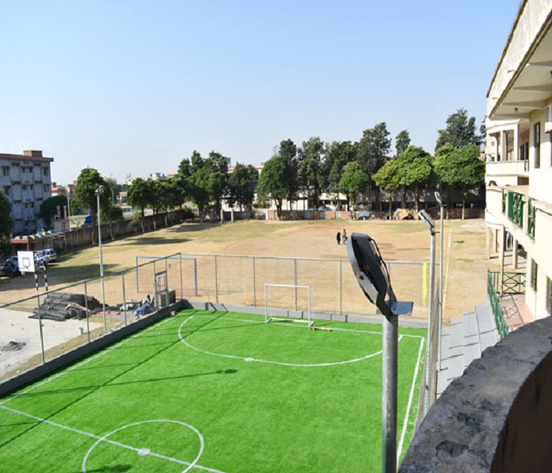
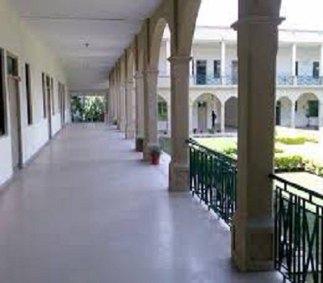
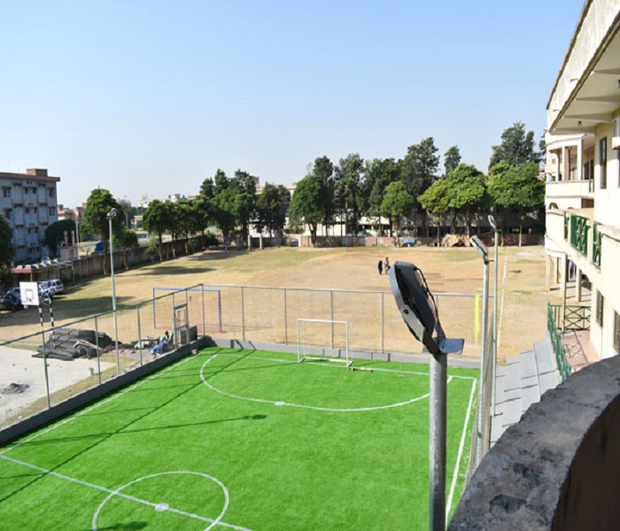
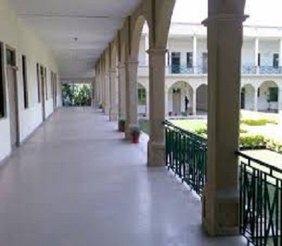

Introduction
Welcome to Fazaia Intermediate College, O-Level Section!
Dear Students, Parents, and Visitors
FIC E9 Islamabad is a distinguished educational institution offering both Cambridge and Federal Board curricula, accommodating students from preparatory grades to Grade 12. Situated in the heart of Islamabad, the school provides a conducive environment for academic excellence and holistic development.
Our mission is to inspire and empower students to become compassionate leaders, critical thinkers, and global citizens. We believe that education is a powerful tool for transformation and are dedicated to helping students reach their full potential.
The institution places a strong emphasis on co-curricular activities as integral components of its educational philosophy. These activities are meticulously designed to foster character building and enhance personality development among students. From sports to arts, debates, drama, and community service initiatives, FIC E9 Islamabad ensures a well-rounded education that goes beyond textbooks.
Thank you for visiting our website. We invite you to discover more about how Fazaia Intermediate College prepares students for a successful future.
 


